# Verificar, instalar y activar el paquete "tidyverse"if (!require(tidyverse)) {install.packages("tidyverse")}library(tidyverse)# Verificar, instalar y activar el paquete "kableExtra"if (!require(kableExtra)) {install.packages("kableExtra")}library(kableExtra)# Verificar, instalar y activar el paquete "readxl"if (!require(readxl)) {install.packages("readxl")}library(readxl)if (!require(agricolae)) {install.packages("agricolae")}library(agricolae)library(RColorBrewer) library(ggplot2)
Ver código
library(agricolae)
Modelos Discretos de Probabilidad
¿Qué son los modelos discretos de probabilidad?
Primero, iniciemos con la definición de Distribución de probabilidad que implica que todos los posibles valores que resultan de un experimento aleatorio estén junto con la probabilidad asociada a cada valor.
Los modelos discretos de probabilidad son funciones matemáticas que asignan una probabilidad a cada valor posible de una variable aleatoria discreta. Para entenderlo de forma sencilla: una variable es discreta cuando sus resultados se pueden contar uno por uno (1, 2, 3…) y no admiten valores intermedios. Por ejemplo, puedes tener 2 hijos o 3 hijos, pero no 2.5.
Para que un modelo sea válido, debe cumplir dos reglas:
Probabilidad individual: Cada valor de probabilidad P(x) debe estar entre 0 y 1. Suma total: La suma de todas las probabilidades de todos los eventos posibles debe ser exactamente 1. Fórmula: Suma de P(xi) = 1.
2 .Modelo Binomial
\textbf{Distribución Binomial} \\
\text{Función de probabilidad: } P(X = x) = \binom{n}{x} p^x q^{n-x} \\
\text{Media: } \mu = n \cdot p \\
\text{Varianza: } \sigma^2 = n \cdot p \cdot q \\
\text{Desviación estándar: } \sigma = \sqrt{n \cdot p \cdot q}
n = Número de ensayos
X = Número de éxitos
p = probabilidad de éxito en cada ensayo
q = probabilidad de fracaso en cada ensayo
Se aplica a procesos donde se repite un número fijo de ensayos independientes y cada uno solo tiene dos resultados posibles.
Características:
El experimento consiste en n ensayos idénticos.
Cada ensayo tiene dos resultados: Éxito (p) o Fracaso (q).
La probabilidad de éxito p es constante en cada ensayo.
Los ensayos son independientes entre sí.
Ejemplo 1: Modelo Binomial
Contexto: Auditoría de Contratos en la Administración Pública.
Situación: Un auditor de la Contraloría sabe que el 10% de los contratos de obras menores tienen errores (p = 0.10). Se selecciona una muestra de 20 contratos (n = 20).
Pregunta: ¿Cuál es la probabilidad de hallar exactamente 3 contratos con errores (x = 3)?
Datos: n = 20 , p = 0.10 , q = 0.90 (Probabilidad de que no tengan errores)
Cálculos:
Ver código
library(kableExtra)tabla <-data.frame(Parametro =c("n","x","p","q"),Valor =c(20,3,0.10,0.90),Descripcion =c("Número total de contratos (ensayos)","Número de contratos con error buscados (éxitos)","Probabilidad de que un contrato tenga error","Probabilidad de que no tenga error (1 - p)"))kable(tabla, align="c", caption="Parámetros del modelo binomial") %>%kable_styling(bootstrap_options =c("striped","bordered"))
Media (u) = n * p = 20 * 0.10 = 2 contratos esperados.
Varianza (v) = n * p * q = 20 * 0.10 * 0.90 = 1.80.
Desviación Estándar (s) = raíz (1.80) = 1.34.
EJERCICIOS
Ejercicio Valium
De acuerdo con un estudio publicado por un grupo de sociólogos de la Universidad de Massachusetts, aproximadamente 60% de los consumidores de Valium en el estado de Massachusetts empezaron a consumirlo a causa de problemas psicológicos. Calcule la probabilidad de que entre los siguientes 8 consumidores entrevistados de este estado:
Exactamente 3 comenzaron a consumir Valium por problemas psicológicos.
Al menos 5 comenzaron a consumir Valium por problemas psicológicos.
df_1 <-data.frame(x = x, fx = fx, xend = x, fxend =0)ggplot(df_1, aes(x = x, y = fx)) +geom_segment(aes(xend = xend, yend = fxend), color ="#5c61cc", size =1) +geom_point(color ="#02b8fa", size =2) +labs(title ="Función de probabilidad binomial",x ="x",y ="f(x)")
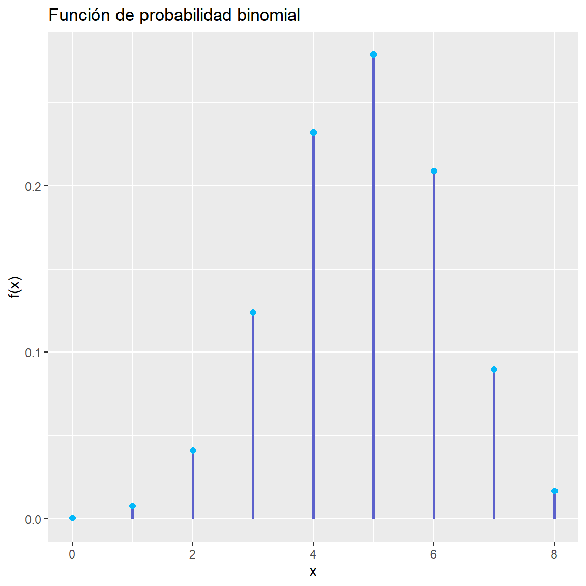
Ver código
df_2 <-data.frame(x = x, Fx = Fx)ggplot(df_2, aes(x = x, y = Fx)) +geom_step(color ="#5c61cc", size =1) +geom_point(color ="#49f5ec", size =2) +labs(title ="Función de distribución binomial",x ="x",y ="F(X)")
La tabla nos proporciona una descripción organizada de los resultados de un experimento que sigue una distribución binomial. Nos dice con qué frecuencia ocurre cada resultado posible y nos permite analizar la distribución de frecuencias en función del número de éxitos en un número fijo de ensayos, bajo las condiciones dadas de probabilidad de éxito.
La probabilidad de que al menos 5 consumidores de Valium empezaron a consumir por problemas psicológicos es del 59.41%
Ver código
ggplot(df_3, aes(x = x, y = y, fill=factor(ifelse(x>4,"Valor","Resto")))) +geom_bar(stat ="identity",width =0.25) +xlab("x") +ylab("Cuantía") +ggtitle("Distribución Binomial") +scale_fill_manual(name ="", values=c("#fab27a","#5c61cc")) +theme_bw()
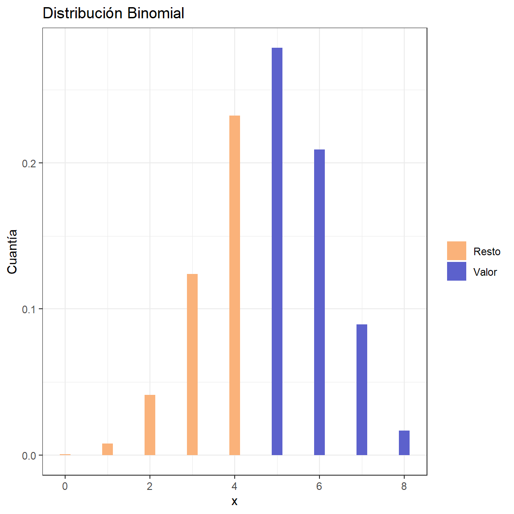
2.1 .Ejercicio 1
Se sabe que el 60% de los alumnos de una universidad asisten a clases el viernes. En una encuesta a 8 alumnos de la universidad. ¿Cuál es la probabilidad de que a) por lo menos siete asistan a clase el viernes? b) por lo menos dos no asistan a clase.
En una encuesta a 8 alumnos de la universidad: A. ¿Cuál es la probabilidad de que por lo menos siete asistan a clase el viernes? (Esto significa P(X \ge 7), es decir, P(X = 7) + P(X = 8)).
La probabilidad de que por lo menos siete alumnos asistan a clase el viernes es del 10.64%
Ver código
rango =0:ndf_3 =data.frame(x = rango, y =dbinom(rango, size=n, prob=p))ggplot(df_3, aes(x = x, y = y, fill=factor(ifelse(x>=7,"Valor","Resto")))) +geom_bar(stat ="identity", width =0.25) +xlab("x") +ylab("Cuantía") +ggtitle("Distribución Binomial - Por lo menos 7") +scale_fill_manual(name ="", values=c("#fab27a","#5c61cc")) +theme_bw()
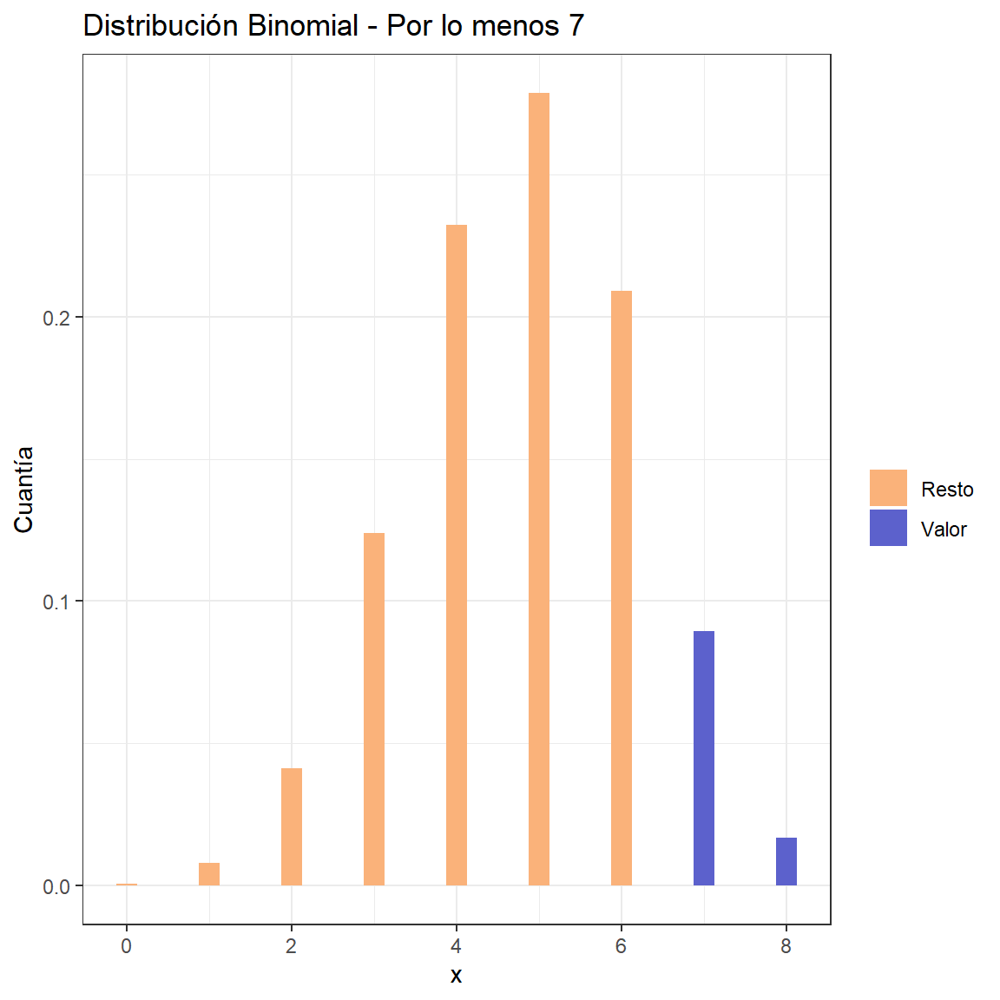
La gráfica de cuantía muestra que la mayor parte de la probabilidad se desplaza hacia la derecha, dado que la asistencia es alta (60\%). Sin embargo, el evento de que asistan 7 u 8 alumnos es relativamente exigente, acumulando solo un 10.64%. Visualmente, se observa que las barras resaltadas son las últimas dos de la distribución.
En una encuesta a 8 alumnos de la universidad: B. ¿Cuál es la probabilidad de que por lo menos dos no asistan a clase?
La probabilidad de que por lo menos dos alumnos no asistan a clase es del 89.36%.
Ver código
ggplot(df_3, aes(x = x, y = y, fill=factor(ifelse(x<=6,"Valor","Resto")))) +geom_bar(stat ="identity", width =0.25) +xlab("x") +ylab("Cuantía") +ggtitle("Distribución Binomial - Por lo menos 2 no asisten (X <= 6)") +scale_fill_manual(name ="", values=c("#fab27a","#5c61cc")) +theme_bw()
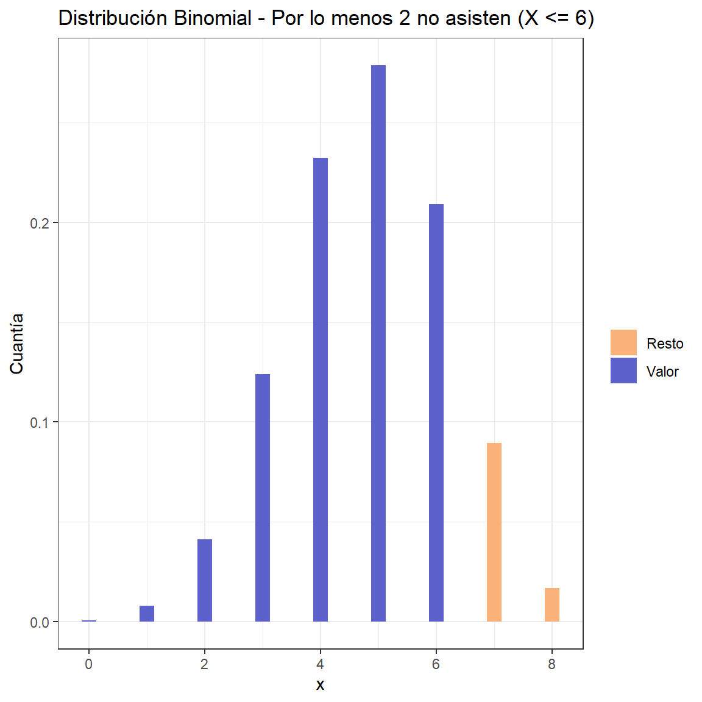
Este escenario equivale a que asistan entre 0 y 6 alumnos. La gráfica muestra que este es el escenario más probable (89.36%), ya que abarca casi toda la distribución. Esto indica que es muy frecuente que en un grupo de 8, al menos un par de alumnos falten a clase los viernes.
2.2 .Ejercicio 2
Según los registros universitarios fracasa el 5% de los alumnos de cierto curso. ¿cuál es la probabilidad de que, de 6 estudiantes seleccionados al azar, menos de 3 hayan fracasado?
La probabilidad de que menos de 3 estudiantes hayan fracasado es del 99.78%.
Ver código
rango =0:ndf_3 =data.frame(x = rango, y =dbinom(rango, size=n, prob=p))ggplot(df_3, aes(x = x, y = y, fill=factor(ifelse(x<3,"Valor","Resto")))) +geom_bar(stat ="identity", width =0.25) +xlab("x") +ylab("Cuantía") +ggtitle("Distribución Binomial - Menos de 3 fracasos") +scale_fill_manual(name ="", values=c("#fab27a","#5c61cc")) +theme_bw()
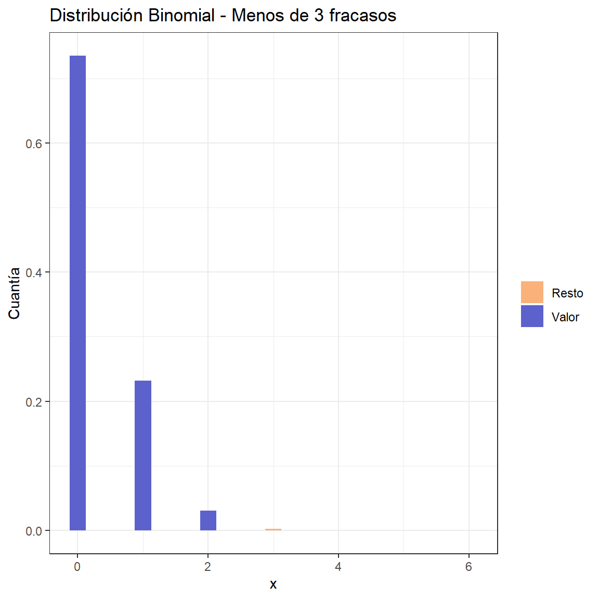
La distribución está fuertemente sesgada a la izquierda hacia el valor cero. La gráfica muestra que la barra de x=0 es la predominante. Al agrupar los valores 0, 1 y 2, obtenemos una probabilidad casi total del 99.78%. Esto le indica a la universidad que, con una tasa de fracaso tan baja, es extremadamente raro encontrar a 3 o más alumnos que pierdan el curso en una muestra pequeña.
2.3 .Ejercicio 3
En promedio, el 10% de las varillas de madera usadas en cierto producto presentan problemas para ser usadas. ¿cuál es la probabilidad de que en un paquete de 15 varillas, a) encuentre exactamente 5 con defectos. b) por lo menos 10 estén nudosas, c) no más de 4 estén nudosas.
La probabilidad de que exactamente 5 varillas tengan defectos es del 1.05%.
Ver código
rango =0:ndf_3 =data.frame(x = rango, y =dbinom(rango, size=n, prob=p))ggplot(df_3, aes(x = x, y = y, fill=factor(ifelse(x==5, "Valor", "Resto")))) +geom_bar(stat ="identity", width =0.4) +xlab("x") +ylab("Cuantía") +ggtitle("Distribución Binomial - Exactamente 5") +scale_fill_manual(name ="", values=c("#fab27a", "#5c61cc")) +theme_bw()
La gráfica muestra que el valor 5 se encuentra alejado de la zona de mayor frecuencia (que son 1 y 2 defectos). Por ello, la probabilidad es baja (1.05%). Visualmente, la barra resaltada es pequeña en comparación con las barras iniciales.
La probabilidad de que por lo menos 10 estén nudosas es del 0.00% (es un evento extremadamente improbable).
Ver código
ggplot(df_3, aes(x = x, y = y, fill=factor(ifelse(x>=10, "Valor", "Resto")))) +geom_bar(stat ="identity", width =0.4) +xlab("x") +ylab("Cuantía") +ggtitle("Distribución Binomial - Por lo menos 10") +scale_fill_manual(name ="", values=c("#fab27a", "#5c61cc")) +theme_bw()
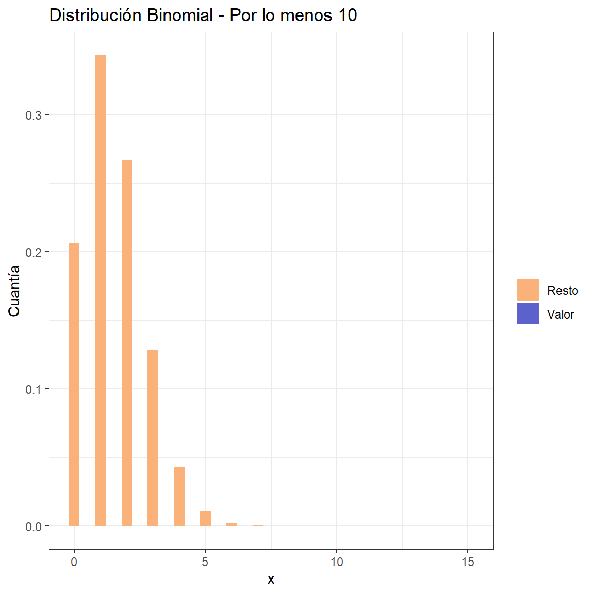
La gráfica muestra una distribución con un sesgo positivo muy pronunciado hacia la izquierda. Debido a que la probabilidad de éxito es baja (p = 0.10), la masa de probabilidad se concentra en los valores 0, 1 y 2. Las barras correspondientes a x son prácticamente invisibles, lo que confirma visualmente que la probabilidad de encontrar 10 o más varillas defectuosas es casi nula (0.00%).
No más de 4 estén nudosas. (Significa P(X ), es decir, 0, 1, 2, 3 o 4).
La probabilidad de que no más de 4 estén nudosas es del 98.73%.
Ver código
ggplot(df_3, aes(x = x, y = y, fill=factor(ifelse(x<=4, "Valor", "Resto")))) +geom_bar(stat ="identity", width =0.4) +xlab("x") +ylab("Cuantía") +ggtitle("Distribución Binomial - No más de 4") +scale_fill_manual(name ="", values=c("#fab27a", "#5c61cc")) +theme_bw()
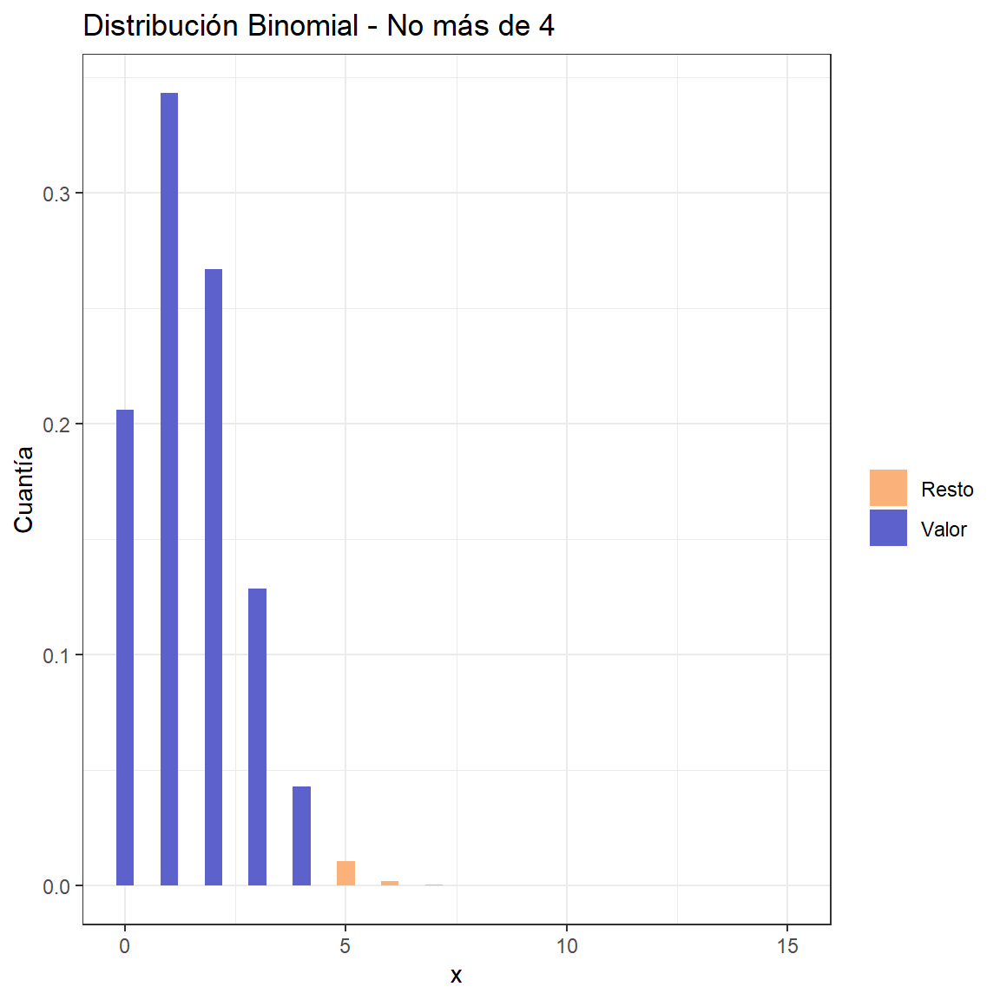
En esta gráfica, las barras resaltadas en color cubren casi la totalidad del área bajo la curva de cuantía. Esto indica que en un paquete de 15 unidades, lo más común y esperado es encontrar entre 0 y 4 varillas con defectos. El hecho de que la probabilidad sea del 98.73% se refleja en que casi todas las barras significativas están marcadas como “Valor”.
2.4 .Ejercicio 4
Una compañía de seguros considera que alrededor del 25% de los carros se accidentan cada año. ¿Cuál es la probabilidad de que por lo menos 3 de una muestra de 7 vehículos asegurados, se haya accidentado
La probabilidad de que por lo menos 3 vehículos se hayan accidentado es del 24.36%.
Ver código
rango =0:ndf_3 =data.frame(x = rango, y =dbinom(rango, size=n, prob=p))ggplot(df_3, aes(x = x, y = y, fill=factor(ifelse(x>=3,"Valor","Resto")))) +geom_bar(stat ="identity", width =0.3) +xlab("x") +ylab("Cuantía") +ggtitle("Distribución Binomial - Por lo menos 3 accidentados") +scale_fill_manual(name ="", values=c("#fab27a","#5c61cc")) +theme_bw()
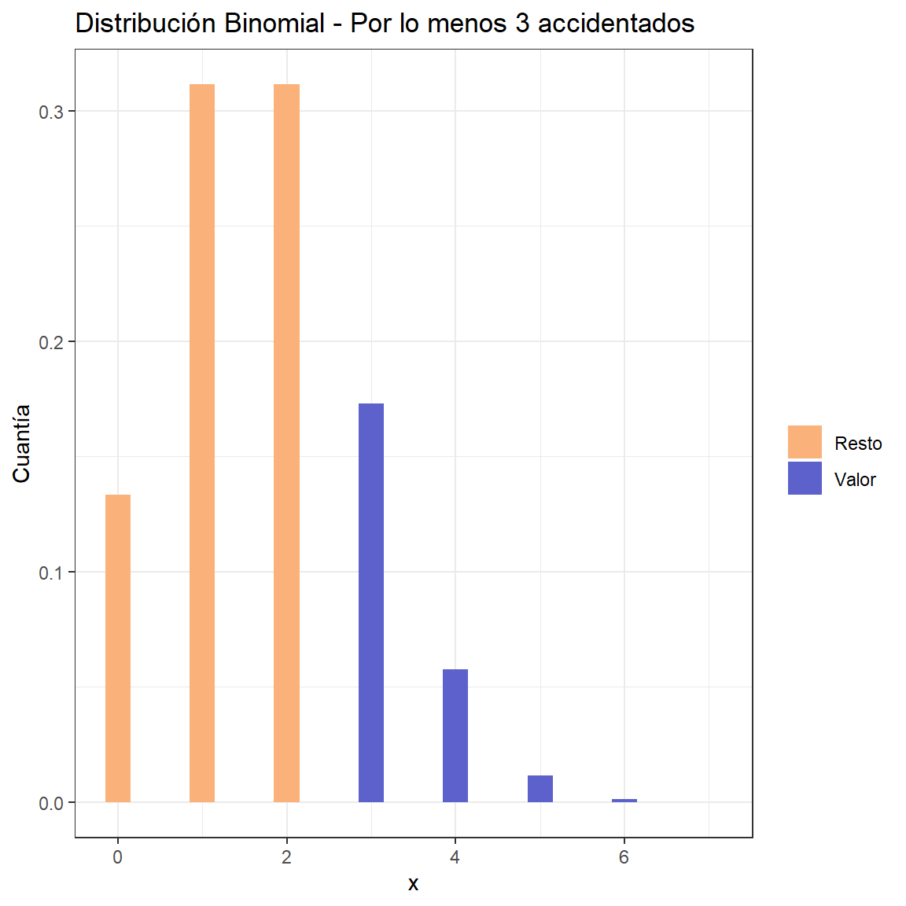
La gráfica muestra que la probabilidad de encontrar 3 o más vehículos accidentados es del 24.36%, concentrándose la mayor parte de la probabilidad en valores bajos (0, 1 y 2), dado que la probabilidad individual de accidente es relativamente baja (25%).
2.5 .Ejercicio 5
Los registros muestran que 30% de los pacientes admitidos en una clínica, no pagan sus facturas y eventualmente se condona la deuda. Suponga que llegan 4 nuevos pacientes a la clínica, cual es la probabilidad de que se tenga que perdonar la deuda de uno de los cuatro. b) los cuatro pacientes paguen sus facturas.
La probabilidad de que se tenga que perdonar la deuda de exactamente un paciente es del 41.16%.
Ver código
rango =0:ndf_3 =data.frame(x = rango, y =dbinom(rango, size=n, prob=p))ggplot(df_3, aes(x = x, y = y, fill=factor(ifelse(x==1,"Valor","Resto")))) +geom_bar(stat ="identity", width =0.3) +xlab("x") +ylab("Cuantía") +ggtitle("Distribución Binomial - Exactamente 1 condonación") +scale_fill_manual(name ="", values=c("#fab27a","#5c61cc")) +theme_bw()
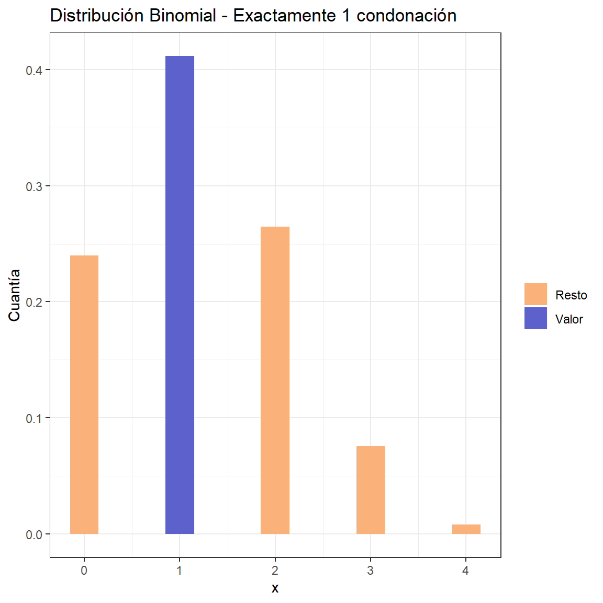
La gráfica identifica que el valor x = 1 es la “moda” de la distribución o el evento más probable. Con una probabilidad del 41.16%, la barra central destaca sobre las demás, indicando que, en un grupo de 4 pacientes, la situación más frecuente para la clínica será tener que perdonar la deuda a exactamente uno de ellos.
¿Cuál es la probabilidad de que los cuatro pacientes paguen sus facturas? P(X = 0)
La probabilidad de que los cuatro pacientes paguen sus facturas (0 condonaciones) es del 24.01%.
Ver código
ggplot(df_3, aes(x = x, y = y, fill=factor(ifelse(x==0,"Valor","Resto")))) +geom_bar(stat ="identity", width =0.3) +xlab("x") +ylab("Cuantía") +ggtitle("Distribución Binomial - Los cuatro pagan (X = 0)") +scale_fill_manual(name ="", values=c("#fab27a","#5c61cc")) +theme_bw()
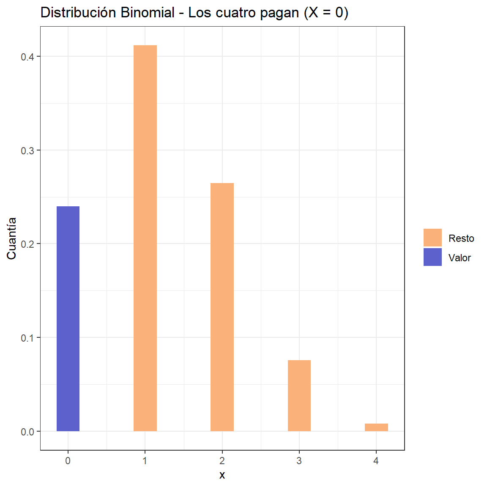
La gráfica muestra que la probabilidad de que nadie necesite condonación (x = 0) es la segunda más alta (24.01%). Visualmente, esto permite a la administración de la clínica entender que existe casi una cuarta parte de probabilidad de que todos los pacientes nuevos cumplan con sus obligaciones financieras, aunque es menos probable que el escenario de tener un deudor.
\lambda: Media o promedio de éxitos por unidad de medida.
x: Cantidad de éxitos cuya probabilidad se quiere hallar.
e: Constante de Euler (2.71828\dots).
!: Operación factorial.
Es una distribución de probabilidad discreta que se utiliza para modelar el número de eventos que ocurren en un intervalo fijo de tiempo, distancia, área o volumen, bajo el supuesto de que estos eventos ocurren con una tasa media constante y de forma independiente entre sí. Es ideal para situaciones donde la probabilidad de éxito es pequeña y el número de observaciones es muy grande (eventos raros).
Características:
La probabilidad de que ocurra un evento es proporcional al tamaño del intervalo.
Los eventos ocurren de forma independiente.
Se utiliza para eventos “raros” o conteos en periodos específicos.
Ejemplo 2: Modelo De Poisson
Contexto Gestión de colas en Ventanilla Única de Atención al Ciudadano.
Situación: En una oficina de trámites de pasaportes, llegan en promedio 8 ciudadanos por hora (Lambda = 8) durante el turno de la mañana. Pregunta: ¿Cuál es la probabilidad de que lleguen exactamente 12 personas en una hora (x = 12), lo que causaría un retraso en el servicio?
Datos: Lambda (L) = 8, e (Constante) = 2.71828
Cálculos:
Ver código
library(kableExtra)tabla <-data.frame(Parametro =c("λ (Lambda)", "x", "e"),Valor =c(8, 12, 2.71828),Descripcion =c("Promedio de personas que llegan por hora","Número exacto de personas que queremos calcular","Constante de Euler" ))kable(tabla, align ="c", caption ="Parámetros de la distribución de Poisson") %>%kable_styling(bootstrap_options =c("bordered"),full_width =FALSE,position ="center" )
El conmutador de un hospital recibe en promedio 20 llamadas cada dos minutos. ¿Cuál es la probabilidad de que lleguen como máximo dos llamadas en un periodo de 15 segundos? Promedio original: 20 llamadas cada 2 minutos (120 segundos).
La probabilidad de que lleguen como máximo dos llamadas en 15 segundos es del 54.38%.
Ver código
rango =0:10df_3 =data.frame(x = rango, y =dpois(rango, lambda))ggplot(df_3, aes(x = x, y = y, fill=factor(ifelse(x<=2,"Valor","Resto")))) +geom_bar(stat ="identity", width =0.25) +xlab("x") +ylab("Cuantía") +ggtitle("Distribución de Poisson - Máximo 2 llamadas") +scale_fill_manual(name ="", values=c("#fab27a","#5c61cc")) +theme_bw()
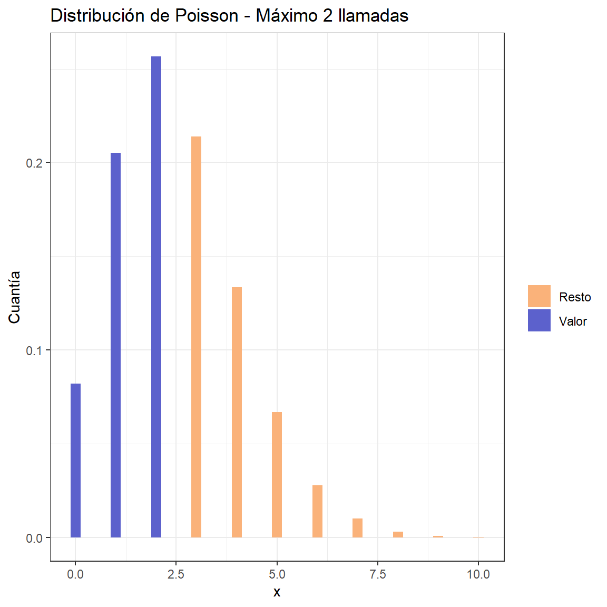
La gráfica de cuantía para la distribución de Poisson con \lambda = 2.5 muestra un ligero sesgo a la derecha. El área resaltada corresponde a los valores 0, 1 y 2, los cuales concentran más de la mitad de la probabilidad total (54.38%). Esto indica que, aunque el promedio es de 2.5 llamadas, es bastante común recibir 2 llamadas o menos en ese lapso de tiempo.
3.2 .Ejercicio 7
Los clientes llegan a una exhibición a razón de 6,8 clientes / hora. Calcule las probabilidades solicitadas para los distintos periodos de tiempo.
La probabilidad de que lleguen por lo menos dos clientes en media hora es del 85,32%.
Ver código
rango_a =0:12df_a =data.frame(x = rango_a, y =dpois(rango_a, lambda_a))ggplot(df_a, aes(x = x, y = y, fill=factor(ifelse(x>=2,"Valor","Resto")))) +geom_bar(stat ="identity", width =0.3) +xlab("x") +ylab("Cuantía") +ggtitle("Poisson - Media hora (λ = 3.4) - Al menos 2 clientes") +scale_fill_manual(name ="", values=c("#fab27a","#5c61cc")) +theme_bw()
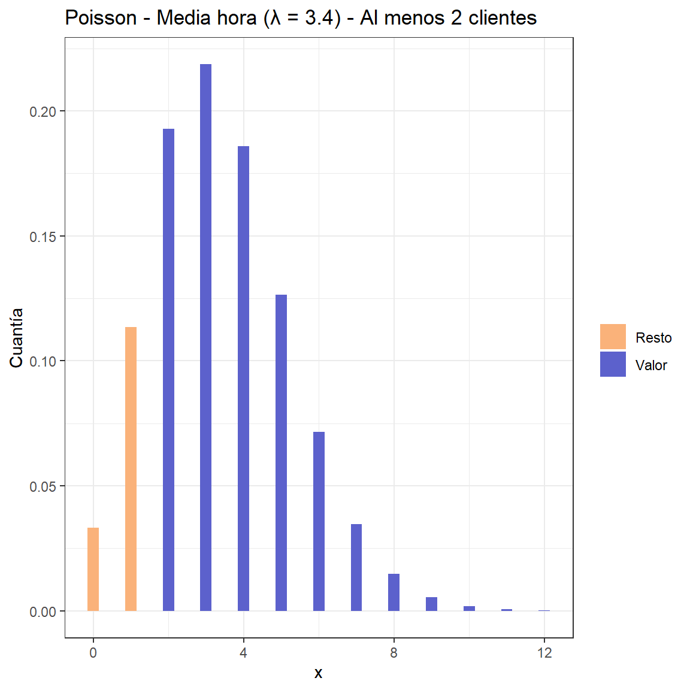
La gráfica para el intervalo de media hora muestra que, con un promedio de 3,4 clientes, es sumamente probable que lleguen 2 o más personas. Visualmente, el área resaltada en verde domina la distribución, dejando fuera únicamente los casos de 0 y 1 cliente, lo que resulta en una probabilidad alta del 85,32%.
¿Cuál es la probabilidad de que en cualquier hora dada llegue más de uno?
La probabilidad de que llegue más de un cliente en una hora es del 99,13%
Ver código
rango_b =0:15df_b =data.frame(x = rango_b, y =dpois(rango_b, lambda_b))ggplot(df_b, aes(x = x, y = y, fill=factor(ifelse(x>1,"Valor","Resto")))) +geom_bar(stat ="identity", width =0.3) +xlab("x") +ylab("Cuantía") +ggtitle("Poisson - Una hora (λ = 6.8) - Más de 1 cliente") +scale_fill_manual(name ="", values=c("#fab27a","#5c61cc")) +theme_bw()
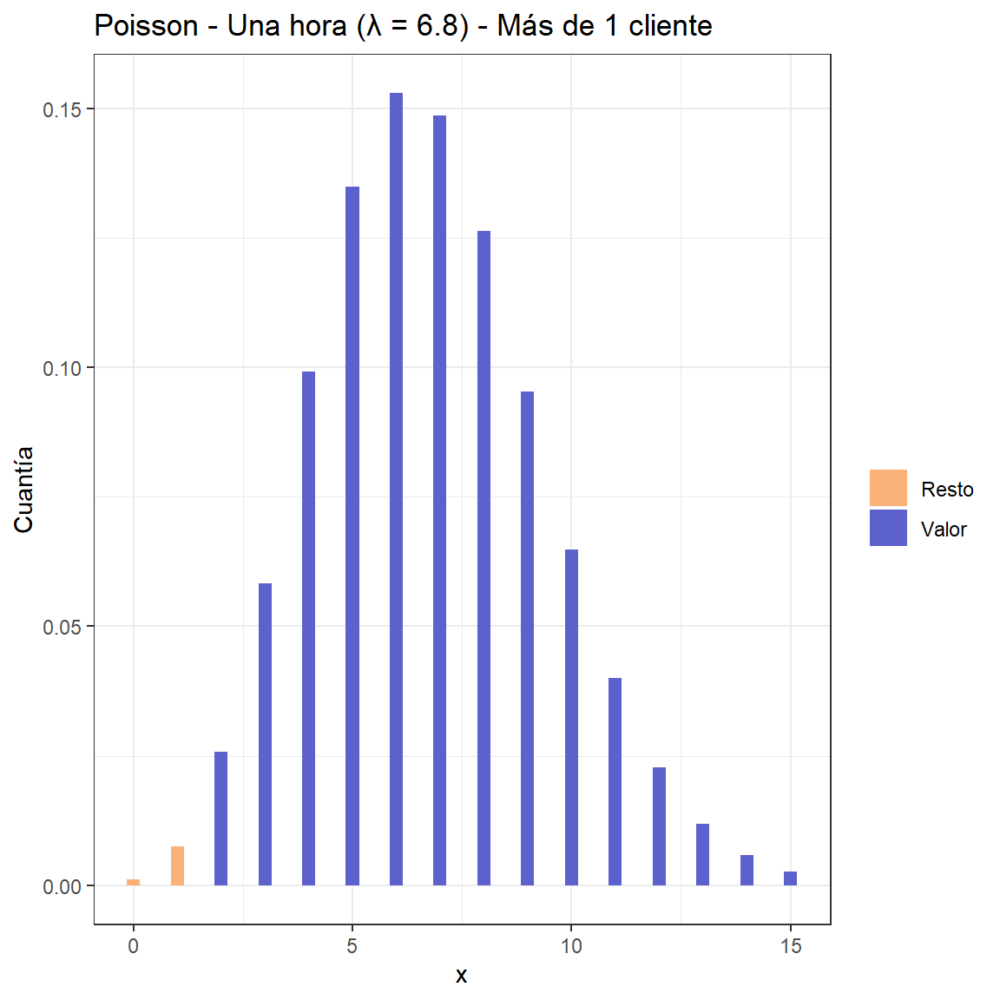
En la gráfica para el periodo de una hora completa, se observa que la distribución se desplaza a la derecha. La probabilidad de que llegue 0 o 1 cliente es mínima (barras naranjas), por lo que la probabilidad de que llegue más de uno es casi absoluta, alcanzando el 99,13%.
3.3 .Ejercicio 8
El número promedio de urgencias que llega a un hospital en una hora es de 12. ¿Cuál es la probabilidad de que en un minuto lleguen por lo menos 2 urgencias? ¿Cuál es el número de urgencias esperado por minuto?
Tasa promedio original: 12 urgencias / hora (60 minutos).
Intervalo de interés: 1 minuto.
Cálculo de \lambda (Lambda): \lambda = \frac{12 \text{ urgencias}}{60 \text{ min}} = 0.2 urgencias por minuto.
Variable (x): Número de urgencias que llegan en un minuto.
# Probabilidad de por lo menos 2 (1 - P(X <= 1))prob_a <-round(ppois(1, lambda, lower.tail =FALSE), 4)# Valor esperado (E[X] = lambda)esperado <- lambdacat("La probabilidad calculada es:", prob_a)
La probabilidad calculada es: 0.0175
Ver código
cat("El número de urgencias esperado por minuto es:", esperado)
El número de urgencias esperado por minuto es: 0.2
La probabilidad de que lleguen por lo menos dos urgencias en un minuto es del 1.75%. El número esperado de urgencias por minuto es 0.2.
Ver código
rango =0:5df_3 =data.frame(x = rango, y =dpois(rango, lambda))ggplot(df_3, aes(x = x, y = y, fill=factor(ifelse(x>=2,"Valor","Resto")))) +geom_bar(stat ="identity", width =0.3) +xlab("x") +ylab("Cuantía") +ggtitle("Poisson - Urgencias por minuto (λ = 0.2)") +scale_fill_manual(name ="", values=c("#fab27a","#5c61cc")) +theme_bw()
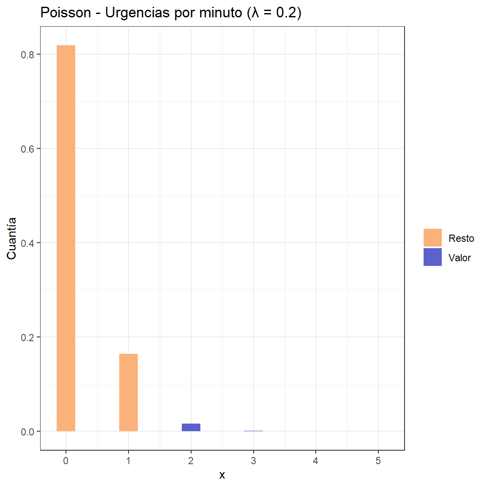
La gráfica de cuantía muestra que, debido a que el promedio es muy bajo (\lambda = 0.2), la gran mayoría de la probabilidad se concentra en recibir 0 urgencias (81.87\%) o 1 urgencia (16.37\%).
Las barras resaltadas en verde (x \ge 2) representan una porción mínima de la distribución, confirmando que es un evento poco frecuente con solo el 1.75% de probabilidad.
3.4 .Ejercicio 9
Las estadísticas indican que en una fábrica se presentan en promedio 10 accidentes por trimestre. Determine la probabilidad de que no haya más de 12 accidentes en el último trimestre.
\lambda (Lambda): 10 accidentes por trimestre.
Variable (x): Número de accidentes en el último trimestre.
Intervalo de interés: 1 trimestre (no requiere ajuste de tasa).
La probabilidad de que no haya más de 12 accidentes en el último trimestre es del 79.16%.
Ver código
rango <-0:20df_3 <-data.frame(x = rango, y =dpois(rango, lambda))ggplot(df_3, aes(x = x, y = y, fill=factor(ifelse(x<=12,"Valor","Resto")))) +geom_bar(stat ="identity", width =0.5) +xlab("x") +ylab("Cuantía") +ggtitle("Poisson - Accidentes Trimestrales (λ = 10)") +scale_fill_manual(name ="", values=c("#fab27a","#5c61cc")) +theme_bw()
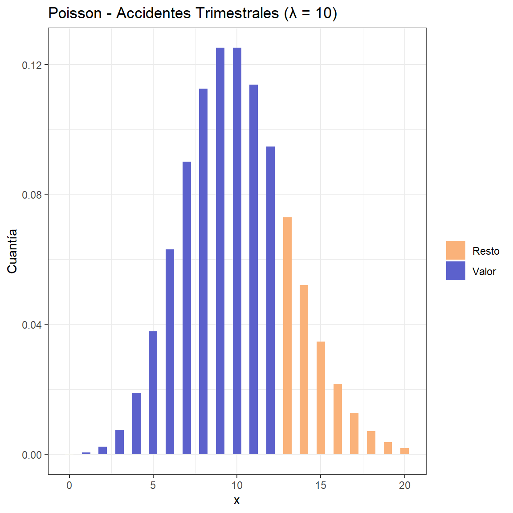
La gráfica de cuantía para \lambda = 10 muestra una distribución que comienza a asemejarse a una campana simétrica. Al sombrear el área de x \le 12, observamos que este rango cubre la gran mayoría de la probabilidad (79.16%). Esto indica que, aunque el promedio es 10, es bastante probable que la cifra final de accidentes no supere los 12 casos, dejando solo un 20.84% de probabilidad para escenarios con 13 o más accidentes.
3.5 .Ejercicio 10
El número de personas que ingresan a la unidad de cuidados intensivos de un hospital en un día cualquiera es de 5 personas diarias. ¿Cuál es la probabilidad de que el número de personas que ingresan a la unidad de cuidados intensivos en un día particular sea menor o igual a 2 personas?
\lambda (Lambda): 5 personas diarias.
Variable (x): Número de personas que ingresan a la unidad de cuidados intensivos.
La probabilidad de que el número de personas que ingresan sea menor o igual a 2 es del 12.47%
Ver código
rango =0:15df_3 =data.frame(x = rango, y =dpois(rango, lambda))ggplot(df_3, aes(x = x, y = y, fill=factor(ifelse(x<=2,"Valor","Resto")))) +geom_bar(stat ="identity", width =0.5) +xlab("x") +ylab("Cuantía") +ggtitle("Poisson - Ingresos a UCI (λ = 5)") +scale_fill_manual(name ="", values=c("#fab27a","#5c61cc")) +theme_bw()
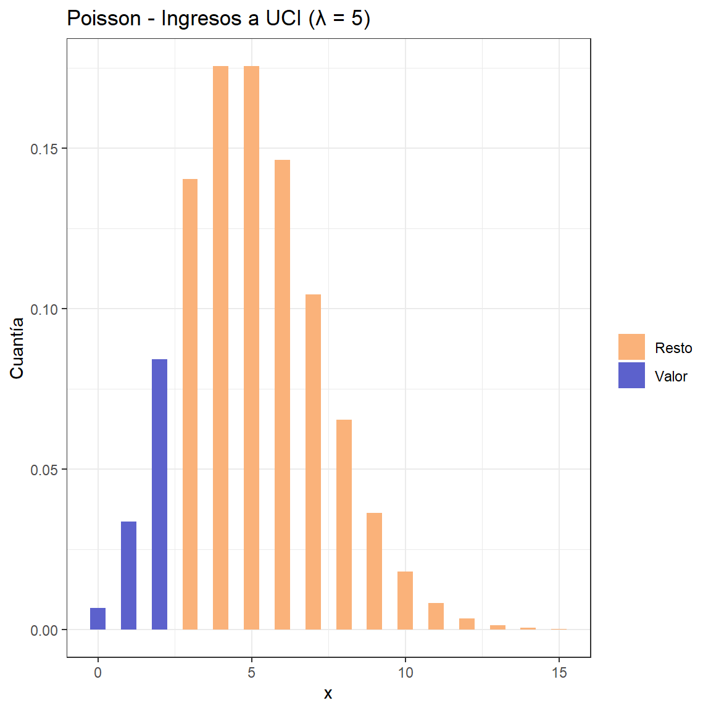
La gráfica de cuantía muestra que, con un promedio de 5 ingresos diarios, la mayor concentración de probabilidad se encuentra entre los valores 3 y 7. El área resaltada en verde (x \le 2) representa una probabilidad baja (12.47%), lo que indica que es poco común que la unidad reciba tan pocos pacientes en un día, siendo mucho más probable que la cifra se acerque o supere el promedio establecido.
N (N mayúscula): Es el Tamaño de la población. Representa el número total de elementos o individuos que existen en el conjunto completo antes de extraer la muestra.
k (o a veces K): Es el Número de éxitos en la población. Representa cuántos elementos dentro de la población total poseen la característica que estamos estudiando (ej. piezas defectuosas totales, empleados con título, etc.).
n (n minúscula): Es el Tamaño de la muestra. Representa la cantidad de elementos que extraemos de la población total para ser observados.
x (o k minúscula en algunos textos): Es el Número de éxitos en la muestra. Representa cuántos de los elementos que sacamos en nuestra muestra de tamaño n poseen la característica deseada.
La Distribución Hipergeométrica es una distribución de probabilidad discreta que se utiliza para calcular la probabilidad de obtener un número determinado de éxitos en una muestra, sin reemplazo, extraída de una población finita.
Características:
La población es finita (N).
La probabilidad de éxito cambia en cada selección porque no se devuelve el elemento extraído.
Se conoce el número total de éxitos en la población (k).
Ejemplo 3: Modelo Hipergeométrico
Contexto:Selección de Comisiones en un Concejo Municipal.
Situación: Un Concejo Municipal tiene 15 regidores (N = 15). De ellos, 9 son de oposición (k = 9) y 6 son del oficialismo. Se debe formar una comisión de 5 miembros (n = 5) al azar.
Pregunta: ¿Cuál es la probabilidad de que exactamente 3 de los elegidos sean de la oposición (x = 3)?
Datos: N (Población total) = 15 , k (Éxitos en la población) = 9, n (Muestra seleccionada) = 5.
Cálculos:
Ver código
library(kableExtra)tabla <-data.frame(Parametro =c("N", "k", "n", "x"),Valor =c(15, 9, 5, 3),Descripcion =c("Total de regidores en el concejo","Total de regidores que son de oposición","Tamaño de la comisión a formar","Número de opositores que queremos en la comisión" ))kable(tabla, align ="c", caption ="Parámetros del modelo hipergeométrico") %>%kable_styling(bootstrap_options =c("bordered"),full_width =FALSE,position ="center" )
Parámetros del modelo hipergeométrico
Parametro
Valor
Descripcion
N
15
Total de regidores en el concejo
k
9
Total de regidores que son de oposición
n
5
Tamaño de la comisión a formar
x
3
Número de opositores que queremos en la comisión
Función de Probabilidad Aplicada: Fórmula: P(x) = [ (kCx) * (N-k C n-x) ] / (NCn)
Un jefe de almacén sabe que 6 de las 25 bicicletas que tiene para la venta presentan fallas en los frenos. Si el vendedor vendió en el día 4 bicicletas, ¿cuál es la probabilidad de que vendiera dos de las que requerían ajuste?
N = 25 (Población total de bicicletas).
K = 6 (Número de éxitos en la población: bicicletas con fallas).
n = 4 (Tamaño de la muestra: bicicletas vendidas).
x = Número de bicicletas con fallas en la muestra.
# Cálculo exacto para x = 2prob_exacta <-round(dhyper(2, m = K, n = N - K, k = n), 4)cat("La probabilidad calculada es:", prob_exacta)
La probabilidad calculada es: 0.2028
La probabilidad de que se vendieran exactamente dos bicicletas con fallas es del 20.28%.
Ver código
rango =0:ndf_3 =data.frame(x = rango, y =dhyper(rango, m = K, n = N - K, k = n))ggplot(df_3, aes(x = x, y = y, fill=factor(ifelse(x==2,"Valor","Resto")))) +geom_bar(stat ="identity", width =0.35) +xlab("x") +ylab("Cuantía") +ggtitle("Distribución Hipergeométrica - Exactamente 2") +scale_fill_manual(name ="", values=c("#fab27a","#5c61cc")) +theme_bw()
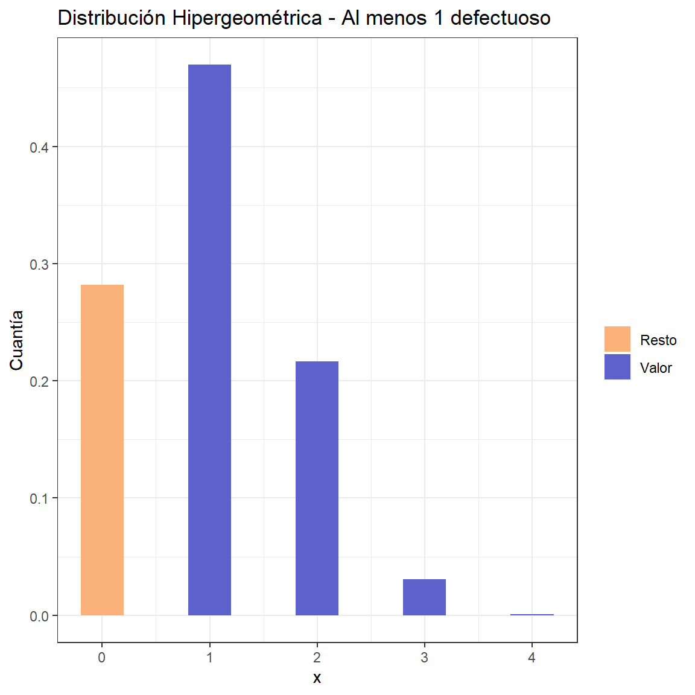
La gráfica de cuantía muestra que, dado que solo hay 6 bicicletas con fallas de un total de 25, lo más probable es que el vendedor haya entregado 0 o 1 bicicleta defectuosa. Sin embargo, la probabilidad de vender exactamente 2 es significativa (20.28%), representada por la barra resaltada. A medida que el número de éxitos en la muestra (x) aumenta hacia 3 o 4, la probabilidad disminuye drásticamente debido a la escasez de bicicletas dañadas en la población total.
4.2 .Ejercicio 12
De un lote de 20 componentes electrónicos, donde se sabe que 5 son defectuosos, se seleccionan 4 al azar para una prueba. ¿Cuál es la probabilidad de que exactamente 2 de los seleccionados sean defectuosos?
Población (N): 20 componentes.
Éxitos en población (K): 5 defectuosos.
Muestra (n): 4 componentes.
Objetivo: Probabilidad de exactamente 2 defectuosos
La gráfica de cuantía para este lote muestra que el escenario más probable es encontrar 1 componente defectuoso (con un 44.8%). La barra resaltada en el valor x=2 representa una probabilidad moderada del 21.67%.
Visualmente, se observa que la probabilidad decae rápidamente para valores superiores a 2, lo que indica que, dada la proporción de fallas en el lote total (25\%), es poco probable que la muestra de 4 contenga más de la mitad de componentes dañados.
4.3 .Ejercicio 13
En un grupo de 15 empleados, 10 son hombres y 5 son mujeres. Si se eligen 3 empleados al azar para un comité, ¿cuál es la probabilidad de que el comité esté formado por exactamente 2 mujeres?
N <-15K <-5# Mujeres (éxito buscado)n_muestra <-3x <-0:3fx <-round(dhyper(x, m = K, n = N - K, k = n_muestra), 4)Fx <-round(cumsum(fx), 4)df_comite =data.frame(x, fx, Fx)kable(df_comite, align ="c") %>%kable_styling("striped", full_width = F) %>%row_spec(0:4, bold = T, color ="#f7f2f2", background ="#5c61cc")
x
fx
Fx
0
0.2637
0.2637
1
0.4945
0.7582
2
0.2198
0.9780
3
0.0220
1.0000
Ver código
df_c1 <-data.frame(x = x, fx = fx, xend = x, fxend =0)ggplot(df_c1, aes(x = x, y = fx)) +geom_segment(aes(xend = xend, yend = fxend), color ="#5c61cc", size =1) +geom_point(color ="#02b8fa", size =2) +labs(title ="Comité de Empleados (Mujeres)", x ="x (Mujeres)", y ="f(x)")
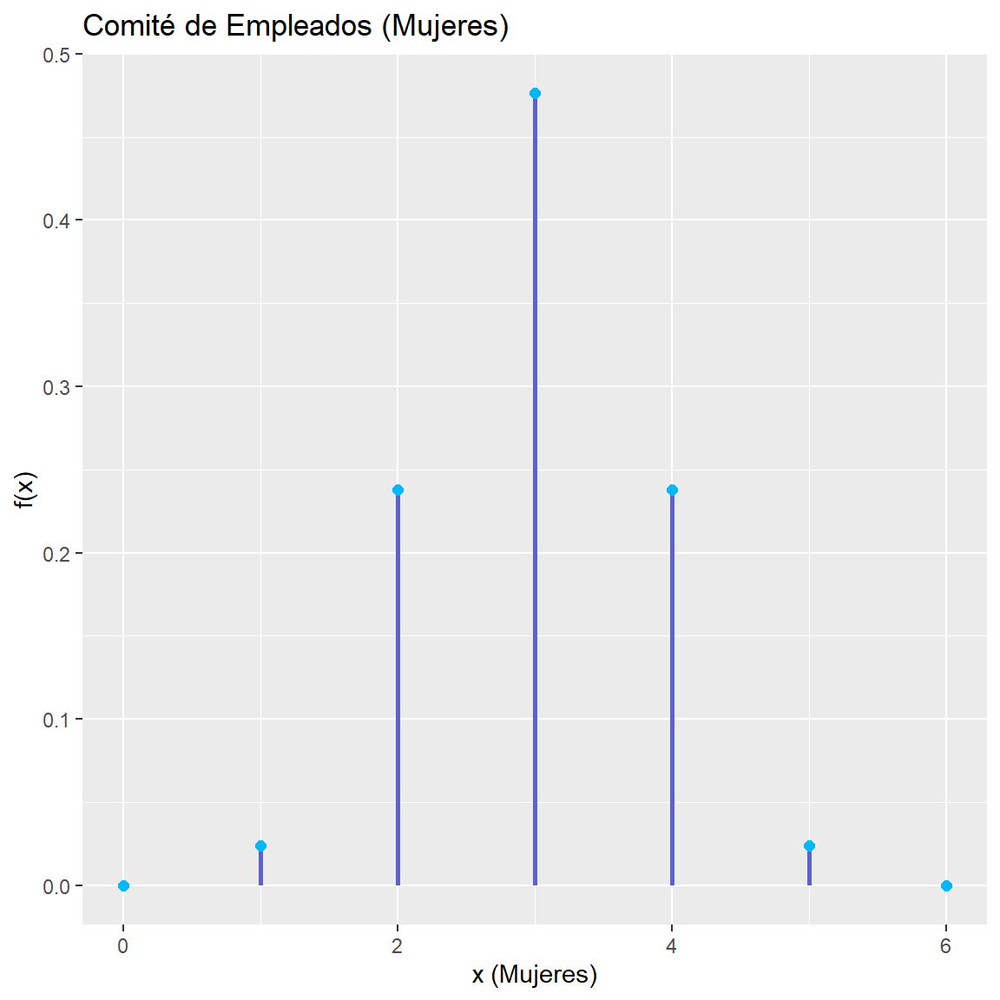
Ver código
# Usando los datos de la tabla df_comitedf_c2 <-data.frame(x = x, Fx = Fx)ggplot(df_c2, aes(x = x, y = Fx)) +geom_step(color ="#5c61cc", size =1) +geom_point(color ="#49f5ec", size =2) +labs(title ="Función de distribución acumulada (Comité)",x ="x (Mujeres seleccionadas)",y ="F(X)") +theme_minimal()
En esta distribución, observamos que las barras más altas corresponden a x=1 y x=0. Al elegir solo a 3 personas de un grupo donde las mujeres son minoría (1/3 del total), la gráfica nos muestra que lo más esperado es que el comité tenga 1 mujer o ninguna. La probabilidad de tener exactamente 2 mujeres (21.98%) se muestra como una barra de altura media, indicando que, aunque no es el resultado más probable, es una posibilidad real en el muestreo aleatorio.
4.4 .Ejercicio 14
Un inspector de calidad examina una muestra de 5 frascos de un lote de 12, de los cuales 3 tienen sellos defectuosos. ¿Cuál es la probabilidad de que al menos uno tenga sello defectuoso?
Población (N): 12 frascos.
Éxitos en población (K): 3 sellos defectuosos.
Muestra (n): 5 frascos.
Objetivo: Probabilidad de al menos uno defectuoso (x \ge 1).
# Cálculo de P(X >= 1) usando el complemento: 1 - P(X = 0)prob_res <-round(1-dhyper(0, m =3, n =9, k =5), 4)cat("La probabilidad calculada es:", prob_res)
La probabilidad calculada es: 0.8409
La probabilidad de que al menos uno de los frascos tenga sello defectuoso es del 84.09%.
Ver código
rango =0:Kdf_3 =data.frame(x = rango, y =dhyper(rango, m = K, n = N - K, k = n))ggplot(df_3, aes(x = x, y = y, fill=factor(ifelse(x>=1,"Valor","Resto")))) +geom_bar(stat ="identity", width =0.4) +xlab("x") +ylab("Cuantía") +ggtitle("Distribución Hipergeométrica - Al menos 1 defectuoso") +scale_fill_manual(name ="", values=c("#fab27a","#5c61cc")) +theme_bw()
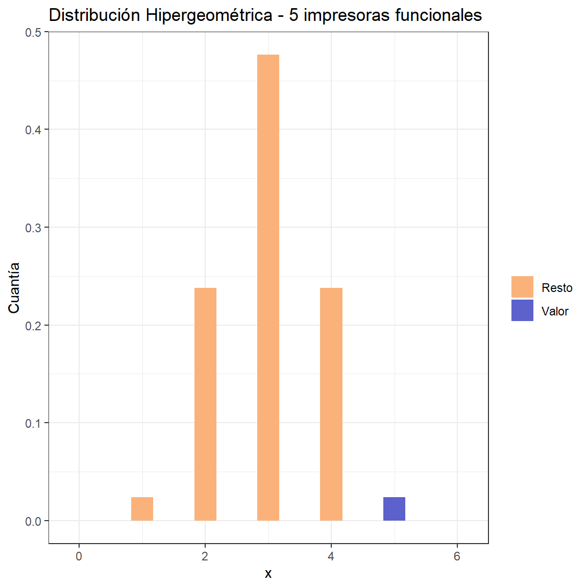
La gráfica de cuantía revela que, al inspeccionar una muestra representativa (5 de 12), la probabilidad de no detectar ningún error es de apenas 15.91% (barra naranja). El área resaltada en verde suma las probabilidades de hallar 1, 2 o 3 frascos defectuosos, dándonos un total de 84.09%. Esta alta probabilidad se explica porque el 25% del lote total presenta fallas; por lo tanto, en una muestra de 5, el valor esperado es de 1.25 defectuosos, haciendo que el escenario de “cero fallas” sea visualmente el menos probable.